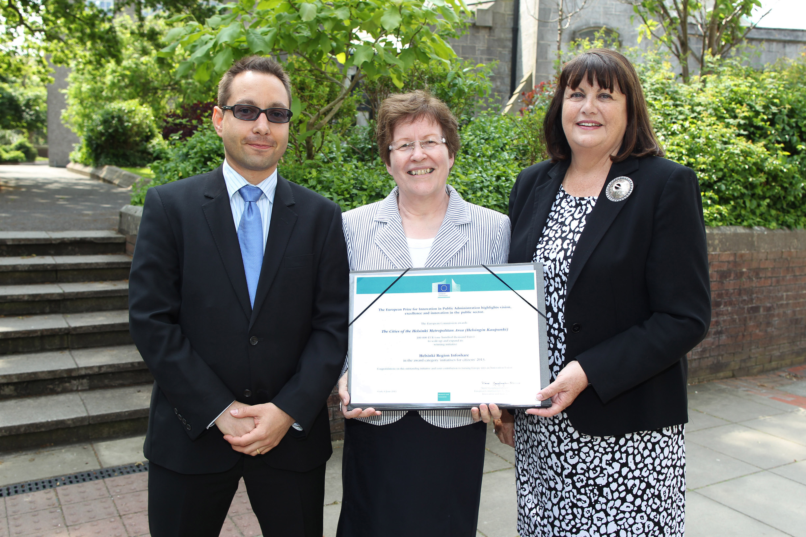
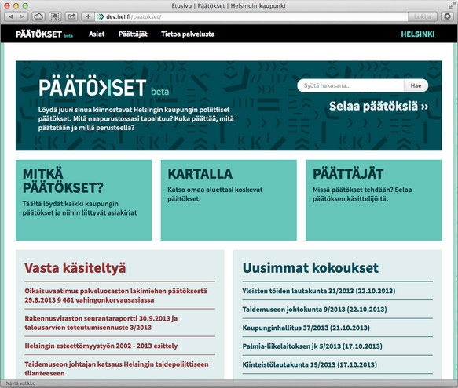
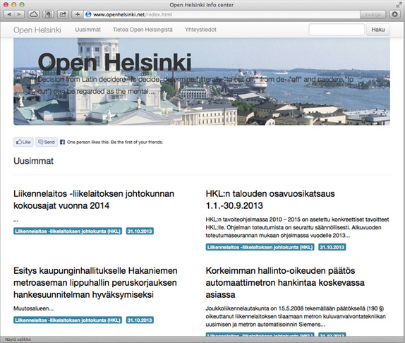
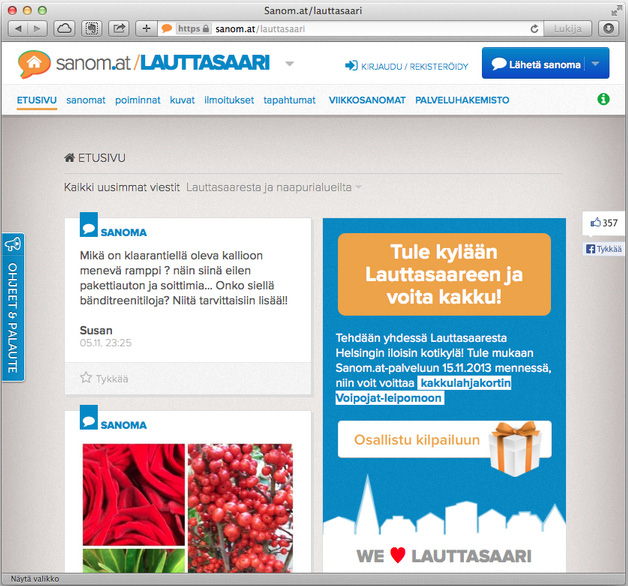
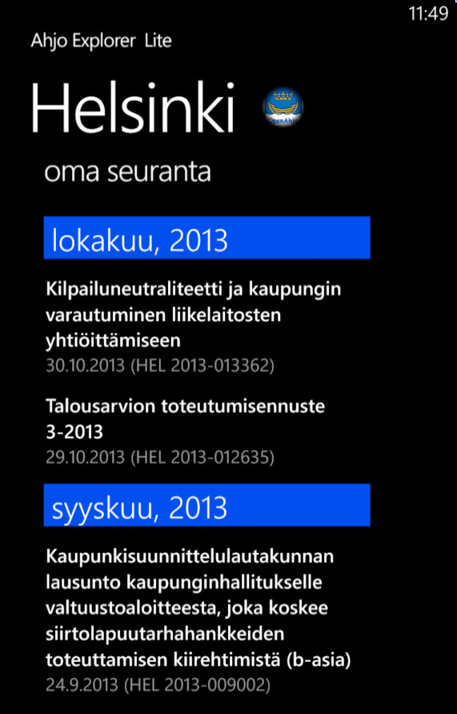

Text Petja Partanen
The Helsinki region is paving the way for better interoperability between its open data reserves in the future.
Click-click. A new coffee roastery in the centre of Helsinki has been granted an environmental permit. Click-click. 2013 has been a good year financially for the City of Helsinki Wholesale Food Market. Click-click. The municipal tax rate for 2014 is 18.5 %.
All this, and tons of other information, can now be found through brand-new web services that search the open data interface to the City of Helsinki case management system. All it takes is a couple of mouse clicks.
In June 2013, the EU awarded Helsinki Region Infoshare (HRI) a European Prize for Innovation for its merits in opening up public data in the Helsinki region. Yet the 100,000 euro prize sum is not chiefly a recognition of past achievements but is intended to be spent on future development work, says Asta Manninen, Director of the City of Helsinki Urban Facts.
”With the help of the award money, we will work on improving the interoperability of our open data reserves. We want data users to be able to easily mash up the open data on HRI with other systems of open data. In the future, it will be possible to combine our open decision-making data with budget information, financial statements and geodata”, says Manninen.
The stage of openness that Helsinki has reached thus far is already exemplary even in a European context. The municipal administration is one of the most transparent in the world. The Act on the Openness of Public Documents has for a long time guaranteed the citizens’ right to browse nearly all public administration documents. Now the access to the documents has also been made extremely easy.
The document interface opened in spring 2013 allows anyone interested to get a clear picture of how issues move through the city decision-making process. You can follow the process just as easily as the Mayors or the City Council or City Board members. Several easy-to-use online services have already been designed using the interface. The decisions of the city can, for instance, be browsed on a map, together with various attached documents and plans.
City of Helsinki Urban Facts, the department responsible for the implementation of the Helsinki Region Infoshare project, is already planning the next steps together with the cities of Espoo, Vantaa and Kauniainen. Half of the 100,000 euro prize sum will be used to hire a programmer, says Project Manager Ville Meloni from Forum Virium Helsinki.
“We are thrilled to see how actively the cities of the Helsinki Metropolitan Area have opened up their data reserves, but currently the data is still not interoperable.”
The task of HRI’s new data expert is to make the open data resources to work together. The experiences and results of the development work will be shared with other cities as well.
Part of the prize money will be used for rewarding the best applications making use of open data reserves.
“We pose challenges to the programmer community: design a visualisation or application that utilises open public data”, says Meloni.
“We are thrilled to see how actively the cities of the Helsinki Metropolitan Area have opened up their data reserves, but currently the data is still not interoperable.”
The open data service Helsinki Region Infoshare received the European Commission’s prize for innovation in public administration. The prize sum is 100,000 euro.
The award money will be used to further develop the HRI service and to promote the citizens’ access to information about the cities’ decision-making. The innovation prize was announced at the Week of Innovative Regions (WIRE 2013) conference in Cork, Ireland, in June 2013.

•
The texts of the publication are licensed under the 'HRI-nimeä' attribution. All reuse of the material must be accompanied by the name of the author (Petja Partanen or Terhi Upola) and the publisher (Helsinki Region Infoshare).
The open interface to the city’s case management is exploited by several online and mobile services.




Open interface to the governance data of the Ahjo system
Open source project – head programmer is an open data expert hired by the city
City of Helsinki: 40,000 staff, 30 departments, 6 public utilities, 129 enterprises with city ownership.
All governance documents are stored in electronic from in the Ahjo system.